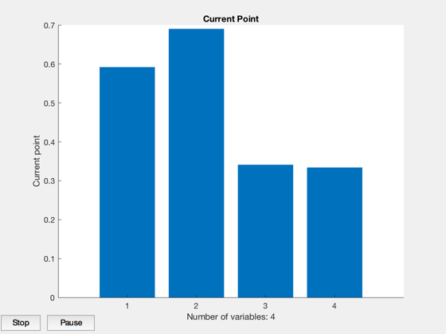
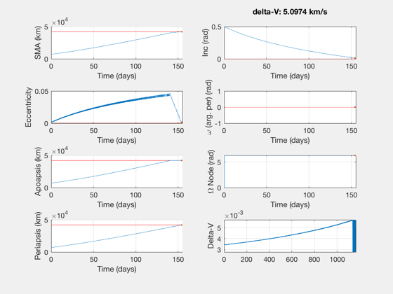
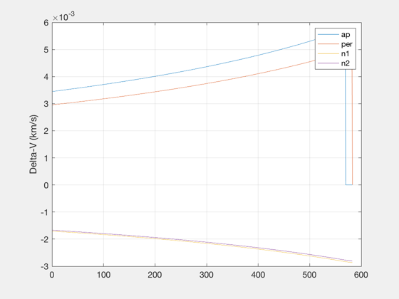

Policy to minimize a combo delta-V/time to a target orbit with fmincon
This version minimizes a combination of delta-V and transfer time. fmincon computes gradients of the cost function and allows bounds on the maximum DV per burn. No constraints are applied.
Default demo is LEO to GEO with plane change. For a low DV solution, you must start with a zero policy at one of the nodes; for a low transfer time solution, it's better to start with the same policy at both nodes.
The cost is the sum of the DV plus the transfer time, in units of 10 days, times the input factor:
cost = dV + tDur/(10*86400)*fac
Examples: 5.1 km/s in 190 days
See also: PropagateBurnPolicyImpulsive
%-------------------------------------------------------------------------- % Copyright (c) 2019 Princeton Satellite Systems, Inc. % All rights reserved. %-------------------------------------------------------------------------- % Setup the data - default inclined LEO to GEO data = PropagateBurnPolicyImpulsive; % Analytic result for comparison dInc = data.el1(2) - data.el0(2); [dVHoh,dv1,dv2,Di1,Di2] = DVHohInc(data.el0(5),data.el0(1),data.el1(5),data.el1(1),dInc); fprintf('Case ''analytic'': \n'); fprintf(' delta-V: %g km/s \n',dVHoh); % Optimization options - must increase step size opts = optimoptions('fmincon'); opts.Display = 'iter'; opts.PlotFcns = 'optimplotx'; opts.FiniteDifferenceStepSize = 5e-2; % finally, some results with >5e-2 % low fac: minimize dV, try 0.01 % high fac: minimize transfer time, try 10 % To reach a specific DV, set fac = 0. fac = 0.01; data.dvMax = 5; % km/s data.dvMin = 0.005; % 5 m/s is the initial max DV % Create an initial policy guess. The guess should be between 0 and 1, or can % also be negative if part of an array. It is multiplied by dvMin to get the % policy. %-------- % Scalar, 1 pt: (works best) guess = [0.5;0.9;0.4;0.4]; % Linear, 2 pts: %{ guess = [0 0.9;... 0.9 0.9;... 0.0 0.9;... 0 0]; %} dataInit = data; dataInit.ap = data.dvMin*guess(1,:); dataInit.per = data.dvMin*guess(2,:); dataInit.inc1 = data.dvMin*guess(3,:); dataInit.inc2 = data.dvMin*guess(4,:); [burnsInit, outInit] = PropagateBurnPolicyImpulsive(dataInit); guessInit = guess'; fprintf('The initial guess: \n'); fprintf(' delta-V: %g km/s \n',SumBurnsDV(burnsInit,1)); fprintf(' Duration: %g days \n',max(outInit.absTimes)/86400); fprintf(' Cost: %g \n',CostFunction(guessInit, dataInit, fac)); % Set the bounds. The guess can be negative ub = ones(size(guess)); lb = -0.5*ones(size(guess)); guess(guess==0) = 1e-6; % in bounds % Call the minimizer fCost = @(x) CostFunction(x, data, fac); if fac == 0 fCost = @(x) DVFunction(x, data, fac); end [outGuess,~,exitFlag,optOut] = fmincon(fCost, guess', [],[],[],[],lb,ub,[],opts); dOut = data; policy = outGuess'; dOut.ap = data.dvMin*policy(1,:); dOut.per = data.dvMin*policy(2,:); dOut.inc1 = data.dvMin*policy(3,:); dOut.inc2 = data.dvMin*policy(4,:); [burns, out] = PropagateBurnPolicyImpulsive(dOut); fprintf('The initial guess: \n'); fprintf(' delta-V: %g km/s \n',SumBurnsDV(burnsInit,1)); fprintf(' Duration: %g days \n',max(outInit.absTimes)/86400); fprintf(' Cost: %g \n',CostFunction(guessInit, dataInit, fac)); fprintf('The optimized result: \n'); fprintf(' delta-V: %g km/s \n',SumBurnsDV(burns,1)); fprintf(' Duration: %g days \n',max(out.absTimes)/86400); fprintf(' Cost: %g \n',CostFunction(outGuess, dOut, fac)); % Plot the results PlotElementsImpulsive(data.el0,burns,[],data.el1); subplot(4,2,2) title(sprintf('delta-V: %g km/s\n',SumBurnsDV(burns,1))) subplot(4,2,8) cla; hold off; plot(burns(:,1)) grid on; ylabel('Delta-V') disp('Optimized Policy (dV):') disp(data.dvMin*policy) NewFig('Burn Policy'); plot(out.policy) grid on ylabel('Delta-V (km/s)') legend('ap','per','n1','n2') function cost = CostFunction( guess, data, fac ) % This cost function is a combination of trip time and delta-V. policy = guess'; data.ap = data.dvMin*policy(1,:); data.per = data.dvMin*policy(2,:); data.inc1 = data.dvMin*policy(3,:); data.inc2 = data.dvMin*policy(4,:); [burns, out] = PropagateBurnPolicyImpulsive(data); dV = SumBurnsDV(burns); tDur = out.absTimes(end); if ~out.ok dV = 1e10; end cost = dV + tDur/(10*86400)*fac + (1-out.ok)*100; end function cost = DVFunction( guess, data, fac ) % This cost function is a minimized when delta V is equal to dvMax. policy = guess'; data.ap = data.dvMin*policy(1,:); data.per = data.dvMin*policy(2,:); data.inc1 = data.dvMin*policy(3,:); data.inc2 = data.dvMin*policy(4,:); [burns, out] = PropagateBurnPolicyImpulsive(data); dV = SumBurnsDV(burns); if ~out.ok dV = 1e10; end cost = abs(dV - data.dvMax); end function [cIn,cEq] = ConstraintFun( guess ) % unused cIn = []; cEq = []; end %--------------------------------------
Case 'analytic':
delta-V: 4.12289 km/s
The initial guess:
delta-V: 5.13628 km/s
Duration: 202.861 days
Cost: 5.33914
First-order Norm of
Iter F-count f(x) Feasibility optimality step
0 5 5.339138e+00 0.000e+00 2.077e-01
1 11 5.363676e+00 0.000e+00 1.437e+00 1.953e-01
2 16 5.316930e+00 0.000e+00 6.080e-01 1.699e-01
3 21 5.264778e+00 0.000e+00 1.197e+00 1.204e-01
4 34 5.258293e+00 0.000e+00 5.119e-01 2.229e-02
5 41 5.254873e+00 0.000e+00 5.373e-01 1.067e-02
6 53 5.252204e+00 0.000e+00 5.767e-01 2.670e-03
7 70 5.251847e+00 0.000e+00 5.803e-01 7.059e-05
8 82 5.251535e+00 0.000e+00 5.834e-01 6.177e-05
9 99 5.251527e+00 0.000e+00 5.835e-01 1.689e-06
10 113 5.251525e+00 0.000e+00 5.835e-01 3.695e-07
11 134 5.251525e+00 0.000e+00 5.835e-01 6.315e-10
12 147 5.251525e+00 0.000e+00 5.835e-01 2.763e-10
13 160 5.251525e+00 0.000e+00 5.835e-01 1.209e-10
Local minimum possible. Constraints satisfied.
fmincon stopped because the size of the current step is less than
the value of the step size tolerance and constraints are
satisfied to within the value of the constraint tolerance.
The initial guess:
delta-V: 5.13628 km/s
Duration: 202.861 days
Cost: 5.33914
The optimized result:
delta-V: 5.0974 km/s
Duration: 154.123 days
Cost: 5.25152
Optimized Policy (dV):
0.002959950825296
0.003451653543799
0.001705177656303
0.001669717876125
  